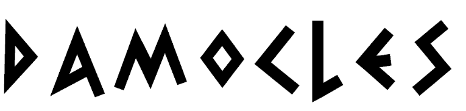
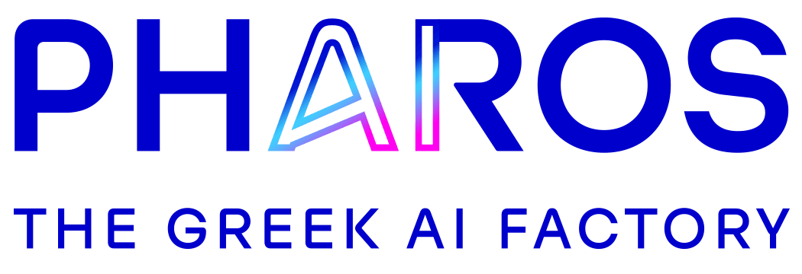
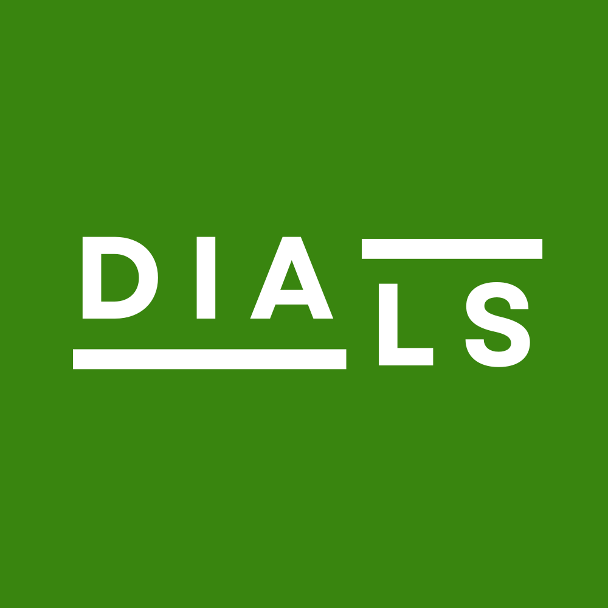
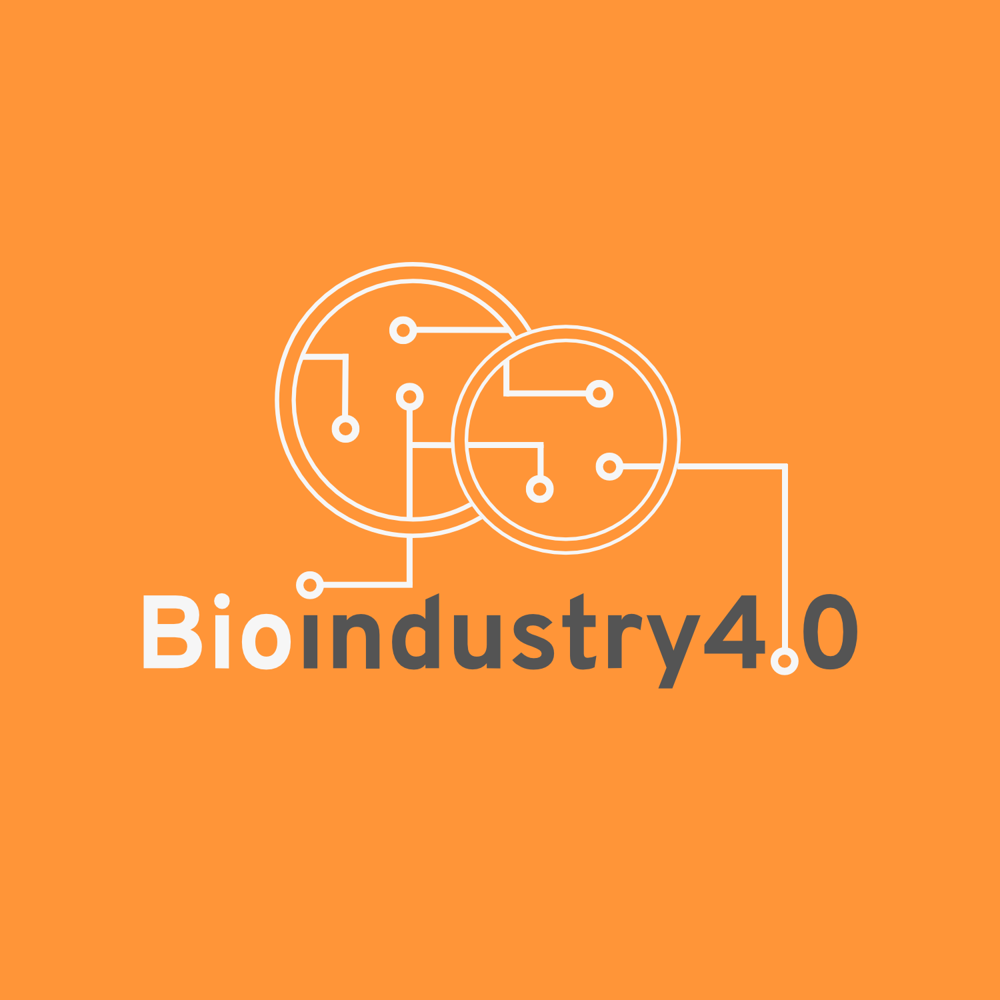

GeorgakilasLab
About: DAMOCLES is a research project dedicated to advancing the computational understanding of complex biological systems through mathematical modeling, artificial intelligence, and single-cell omics analysis. Focusing on Chronic Lymphocytic Leukemia (CLL), the project investigates the dynamic evolution of the tumor microenvironment and the interactions between heterogeneous cellular populations. By integrating high-dimensional single-cell transcriptomic data with computational modeling approaches, DAMOCLES aims to establish a framework for constructing and analyzing dynamic models of cellular systems. Particular emphasis is placed on investigating system stability, bifurcation behavior, and cellular trajectories, supporting a deeper understanding of cancer progression and potentially informing future therapeutic research.
Tags: Dynamical Systems; Single-Cell Transcriptomics; AI; Stochastic Processes; Tumor Microenvironment; CLL.
Funding Programme: ARCHIMEDES - Research in Artificial Intelligence, Data Science and Algorithms. National Recovery and Resilience Plan "Greece 2.0".
Funding Organization: European Union - NextGenerationEU.
Project Duration: 2025 - 2026.
Total Budget: 150.000€.
Organization Through Which the Lab Participates: IMSI, ATHENA Research Center.
Lab's Role: Principal Investigator and Project Coordinator.
Lab's Contribution: Single-Cell Transcriptomics Analysis; Computational Modeling of the CLL Microenvironment; Dynamic Biological Systems Modeling; Stability and Bifurcation Analysis; Cellular Trajectory Analysis.
Project ID: MIS 5154714.
Official Project Record: Non-applicable dedicated official project record. https://archimedesai.gr/en/.
Project Website: Non-applicable dedicated project website. https://archimedesai.gr/en/.

About: PHAROS is a European initiative aiming to establish Greece's national Artificial Intelligence Factory, leveraging the DAEDALUS supercomputer to accelerate AI research, development, and innovation. The project focuses on democratizing access to high-performance computing resources, advanced AI technologies, high-quality datasets, and specialized expertise for researchers, startups, SMEs, and public organizations. Particular emphasis is placed on three strategic domains: Health, Greek Language and Culture, and Sustainability. Through the development of trustworthy AI services, training activities, and collaborative innovation ecosystems, PHAROS aims to strengthen Greece's position in the European AI landscape and facilitate the responsible adoption of AI across scientific, industrial, and societal applications.
Tags: AI; High-Performance Computing; Research Infrastructures; Machine Learning; Digital Innovation; Trustworthy AI.
Funding Programme: Horizon Europe - EuroHPC Joint Undertaking (European AI Factories Initiative).
Funding Organization: EuroHPC Joint Undertaking and Greek National Resources.
Project Duration: 2025 - 2028.
Total Budget: 30.000.000€.
Organization Through Which the Lab Participates: IMSI, ATHENA Research Center.
Lab's Role: Research Partner.
Lab's Contribution: AI; Sinlge-Cell Omics; Spatial Transcriptomics; Training.
Project ID: 101234269.
Official Project Record: https://cordis.europa.eu/project/id/101234269.
Project Website: https://www.pharos-aifactory.eu.

About: IBISBA-DIALS is a European research project dedicated to establishing IBISBA as a sustainable European Research Infrastructure Consortium (ERIC) supporting innovation in industrial biotechnology. The project focuses on developing the governance structures, operational procedures, digital services, and organizational framework required for a distributed European research infrastructure. By strengthening collaboration among national research nodes, harmonizing research services, and promoting responsible research and innovation, IBISBA-DIALS aims to facilitate access to advanced scientific capabilities, accelerate bioprocess development, and support the transition toward sustainable, smart biomanufacturing across Europe.
Tags: Industrial Biotechnology; Research Infrastructures.
Funding Programme: Horizon Europe.
Funding Organization: European Commission.
Project Duration: 2024 - 2026.
Total Budget: 1.498.641€.
Organization Through Which the Lab Participates: IMSI, ATHENA Research Center.
Lab's Role: Work Package Co-Leader.
Lab's Contribution: Compute Infrastructure; Service Catalogue; Project Management System.
Project ID: 101131085.
Official Project Record: https://cordis.europa.eu/project/id/101131085.
Project Website: https://ibisba.eu/dials.

About: BIOINDUSTRY4.0 is a European research project aiming to accelerate the digital transformation of industrial biotechnology by making bioprocess development faster, more cost-effective, and reliable. The project brings together leading European research infrastructures to develop advanced digital services, including AI-powered digital twins, real-time process monitoring, predictive modeling, and interoperable data management solutions. By integrating FAIR data practices, scientific workflow automation, and advanced computational technologies, BIOINDUSTRY4.0 seeks to optimize biomanufacturing processes, enhance research reproducibility, and strengthen the competitiveness and sustainability of the European biotechnology sector.
Tags: Industrial Biotechnology; Digital Twins; Artificial Intelligence; Research Infrastructures; FAIR Data; Workflow Orchestration.
Funding Programme: Horizon Europe.
Funding Organization: European Commission.
Project Duration: 2023 - 2026.
Total Budget: 9.439.568€.
Organization Through Which the Lab Participates: IMSI, ATHENA Research Center.
Lab's Role: Task Leader.
Lab's Contribution: Minimum Information Models; Workflow Orchestration; Data Harmonization and Integration.
Project ID: 101094287.
Official Project Record: https://cordis.europa.eu/project/id/101094287.
Project Website: https://www.bioindustry4.eu.
About: OliveOilMedNet is a European cooperation project dedicated to improving the sustainability, authenticity, and competitiveness of the Mediterranean olive oil sector. Bringing together public authorities, research institutions, and producer associations from seven Mediterranean countries, the project develops and validates innovative methods for determining olive oil botanical and geographical origin, alongside environmentally sustainable cultivation and production practices. By combining physicochemical characterization, artificial intelligence, and digital authentication services, OliveOilMedNet supports reliable olive oil classification, promotes consumer confidence, and strengthens sustainable development throughout the Mediterranean olive oil value chain.
Tags: Olive Oil; Sustainability; Olive Oil Authenticity; Mediterranean Cooperation; Value Chain Innovation.
Funding Programme: Interreg Euro-MED 2021-2027.
Funding Organization: European Union (European Regional Development Fund - ERDF) and National Co-financing.
Project Duration: 2024 - 2027.
Total Budget: 2.529.900€.
Organization Through Which the Lab Participates: ELGO-DIMITRA.
Lab's Role: External Scientific and Technical Collaborator.
Lab's Contribution: Machine Learning; XAI; Authenticity Web Platform.
Project ID: Euro-MED0200570.
Official Project Record: https://keep.eu/projects/29225/Mediterranean-Network-for-t-EN.
Project Website: https://oliveoilmednet.interreg-euro-med.eu.